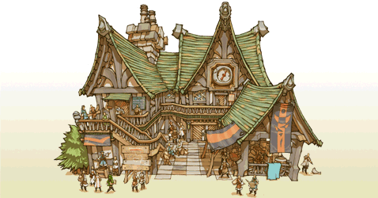

23
|
Gebouwen |
 |
Hieronder volgt een lijst met de belangrijkste gebouwen die je in je koninkrijk kunt bouwen.
● Houses (Huizen)  Small House (Klein huis) : een huis voor twee personen. Vereist een minimale hoeveelheid elementite. Kleine huizen zijn aantrekkelijk voor aspirant-avonturiers en zullen in het begin juist te pas komen om de inkomsten van je koninkrijk te stimuleren.
Small House (Klein huis) : een huis voor twee personen. Vereist een minimale hoeveelheid elementite. Kleine huizen zijn aantrekkelijk voor aspirant-avonturiers en zullen in het begin juist te pas komen om de inkomsten van je koninkrijk te stimuleren.Spacious House (Groot huis) : vereist een grote hoeveelheid elementite, maar deze kosten worden gecompenseerd door de verhoogde inkomsten van de grotere families die in zulke huizen komen wonen. Trekt ook een aspirant-avonturier aan. |
● Citizen Shops (Winkels voor de stedelingen)
Bakery (Bakkerij) : de belangrijkste bron van voedsel voor de burgers. Burgers die hier iets kopen, gaan gelukkig naar huis terug. Emporium (Grootwarenhuis) : het handelscentrum van het koninkrijk, waar burgers exotische producten kunnen kopen. Ingevoerde voorwerpen geven ook inspiratie aan andere winkels en daardoor aan het hele koninkrijk.  |
● Adventurer Shops (Winkels voor de avonturiers)
Weapon Shop (Wapenwinkel) : verkoopt verscheidene wapens die aangepast zijn aan de behoeften van de avonturiers. Je kunt de aanvalskracht van avonturiers verhogen door het onderzoek dat hier wordt gedaan te financieren.  Armor Shop (Pantserwinkel) : verkoopt verscheidene pantsers die aangepast zijn aan de avonturiers. Je kunt de overlevingskansen van de avonturiers vergroten door het onderzoek dat hier wordt gedaan te financieren.
Armor Shop (Pantserwinkel) : verkoopt verscheidene pantsers die aangepast zijn aan de avonturiers. Je kunt de overlevingskansen van de avonturiers vergroten door het onderzoek dat hier wordt gedaan te financieren.Item Shop (Winkel van voorwerpen) : verkoopt verscheidene voorwerpen die aangepast zijn aan de avonturiers. Toverdrankjes en tegengiffen zijn noodzaakelijk voor groepen zonder genezer. |
● Adventurer Buildings (Gebouwen voor de avonturiers)
 White Mage Temple (Tempel voor de witte magiërs) : verleent toegang tot witte magiërs en hun toverkunst. Dankzij de financiering van hun onderzoek zal je krachtigere toverformules kunnen gebruiken.
White Mage Temple (Tempel voor de witte magiërs) : verleent toegang tot witte magiërs en hun toverkunst. Dankzij de financiering van hun onderzoek zal je krachtigere toverformules kunnen gebruiken.Zwarte Mage Temple (Tempel voor de Zwarte Magiërs) : verleent toegang tot zwarte magiërs en hun toverkunst. Dankzij de financiering van hun onderzoek zal je krachtigere toverformules kunnen gebruiken. Training Hall (Trainingscentrum) : verleent toegang tot de capaciteiten van de krijgslieden. Dankzij training kan je ook extra ervaring ("EXP") opdoen. Gaming Hall (Speelzaal) : verleent toegang tot dieven en hun capaciteiten. Andere avonturiers bezoeken ook zulke gebouwen om extra gil te winnen en om zich te ontspannen. |
● Special Buildings (Speciale gebouwen)
 Guild Hall (Gildezaal) : Het gebouw van de centrale administratie, die bevoegd is voor alle zaken die de avonturiers betreffen. Je kunt het aantal avonturiers op het veld alsmede hun wedde verhogen. Tavern (Kroeg) : avonturiers kunnen hier groepjes vormen alvorens de moeilijkste kerkers aan te durven. Je kan hier ook je eigen groepjes vormen. Inn (Herberg) : daar gaan de reizende avonturiers en rondtrekkende handelaars die het koninkrijk bezoeken. |
● Parks (Parken)
Foutain Park (Fonteinpark) : het groen maakt burgers en avonturiers gelukkiger. Bulletin Park (Park met prikborden) : voegt prikborden aan het koninkrijk toe, zodat je veelvoudige opdrachten kunt ophangen. |
 |
 |
 |